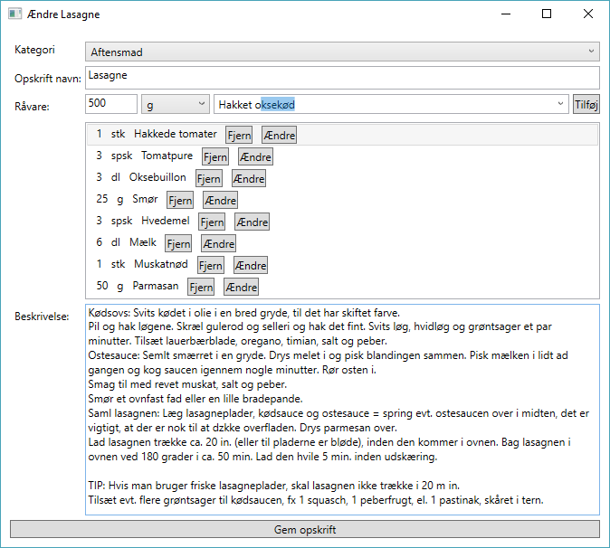

Naviger hen til programmet, som set neden under og åbn den markerede fil:

Nu er programmet åbent, hvilket ses på billedet nedenunder. Her er opskriften Lasagne valgt fra kategorien aftensmad.
- Klikker på den røde knap og udfylder formularen.
- Klikken på den Orange top menu og vælger Ny efter fulgt af Kategori.
- Klikker på den grønne knap eller vælger Ny fra topmenuen, efterfulgt af Opskrift.
- Nu kan du vælge mellem at oprette en opskrift manuelt eller fra link.
- Fra link:
- Find den opskrift du gerne vil gemme, f.eks. Pasta Arrabiata.
- Tryk Hent opskrift. Opskriften vil nu blive hentet.
- Når opskriften er hentet ned, skal du bekræfte at alle ingredienser er aflæst korrekt. Hvis ikke kan du ændre i ingrediensens navn, mængde eller enhed. Tryk bekræft for at gå videre til den næste ingrediens og til sidst for at gemme opskriften.

- Manuel
- Vælg kategori fra rullemenuen.
- Angiv et opskrift navn.
- Indtast mængden, enheden for en råvare. Begynd at skriv i tekst feltet for at finde en allerede oprettet råvare eller opret en ny, blot ved at skrive navnet færdig. Tilføj ingrediensen ved at trykke på Tilføj.
- Angiv en beskrivelse af opskriften og en fremgangsmåde.
- Til sidst gemmes opskriften ved at trykke på Gem opskrift. 